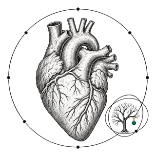

Cardioimmunology Review
The heart, an immune organ
“The stability of the internal environment is the condition for a free and independent life.”
“In the fields of observation, chance favors only the prepared mind.”
“The heart of animals is the foundation of their life.”
The map of the field
Cardioimmunology
Mechanisms, cells and clinical phenotypes: sixty themes, each opening onto a selected reading.
Innate and adaptive immunity interact across these themes.
Find a theme
Select a star to open its reading. Connections indicate related readings; they are not causal claims.
Sources and thematic catalog
A curated reading map: each source is an entry point, not evidence for every possible connection. Method and coverage audit →
- Pattern recognitionExperimental & Molecular Medicine · 2026 · ReviewSelected reading ↗
- ComplementClinical Science · 2025 · ReviewSelected reading ↗
- InflammasomeFrontiers in Pharmacology · 2026 · ReviewSelected reading ↗
- Cytokine networksKidney International Reports · 2026 · ReviewSelected reading ↗
- ImmunometabolismMolecular Biomedicine · 2026 · ReviewSelected reading ↗
- Gut–heart axisNature Communications · 2026 · Human cohort studySelected reading ↗
- Cardiac macrophagesNature Reviews Cardiology · 2025 · ReviewSelected reading ↗
- T lymphocytesJournal of Clinical Investigation · 2025 · ReviewSelected reading ↗
- Dendritic cellsMedComm · 2025 · ReviewSelected reading ↗
- Neutrophils & NETsEuropean Journal of Inflammation · 2026 · ReviewSelected reading ↗
- Antigen presentationMedComm · 2025 · ReviewSelected reading ↗
- Immune toleranceHuman Immunology · 2026 · Translational reviewSelected reading ↗
- ResolutionEuropean Heart Journal Open · 2025 · ReviewSelected reading ↗
- RemodelingAmerican Journal of Physiology-Heart and Circulatory Physiology · 2026 · Mechanistic reviewSelected reading ↗
- FibrosisThe International Journal of Cardiovascular Imaging · 2026 · ReviewSelected reading ↗
- RegenerationExperimental & Molecular Medicine · 2026 · Translational reviewSelected reading ↗
- AtherosclerosisImmunological Reviews · 2026 · ReviewSelected reading ↗
- PericarditisLa Revue de Médecine Interne · 2026 · National care protocolSelected reading ↗
- MyocarditisEuropean Heart Journal · 2025 · Clinical guidelineSelected reading ↗
- SarcoidosisFrontiers in Medicine · 2026 · ReviewSelected reading ↗
- AmyloidosisEuropean Journal of Internal Medicine · 2026 · ReviewSelected reading ↗
- Systemic diseasesRheumatology · 2026 · Clinical guidelineSelected reading ↗
- VasculitisRheumatology · 2026 · ReviewSelected reading ↗
- AutoinflammationLa Revue de Médecine Interne · 2026 · National care protocolSelected reading ↗
- Pulmonary hypertensionComprehensive Physiology · 2026 · ReviewSelected reading ↗
- Heart failure & cardiomyopathyESC Heart Failure · 2025 · ReviewSelected reading ↗
- Cardio-oncologyFrontiers in Pharmacology · 2026 · ReviewSelected reading ↗
- Cardio-infectiologyImmunity · 2026 · Human tissue & animal studySelected reading ↗
- TransplantationFrontiers in Transplantation · 2026 · ReviewSelected reading ↗
- Ocular immunityFrontiers in Medicine · 2026 · ReviewSelected reading ↗
- Renal immunityCommunications Biology · 2026 · Human single-cell studySelected reading ↗
- Neuroimmune axisFrontiers in Immunology · 2026 · ReviewSelected reading ↗
- Pulmonary immunityComprehensive Physiology · 2026 · ReviewSelected reading ↗
- Cardio-rheumatologyMayo Clinic Proceedings · 2026 · ReviewSelected reading ↗
- Clonal hematopoiesisnpj Cardiovascular Health · 2026 · ReviewSelected reading ↗
- Chemokines & traffickingMed Research · 2026 · ReviewSelected reading ↗
- AutoantibodiesJACC: Basic to Translational Science · 2026 · ReviewSelected reading ↗
- Trained immunityCell Research · 2025 · ReviewSelected reading ↗
- B cells & plasma cellsCells · 2026 · ReviewSelected reading ↗
- NK cells & ILCsExperimental & Molecular Medicine · 2026 · ReviewSelected reading ↗
- EosinophilsJournal of Cardiovascular Development and Disease · 2025 · ReviewSelected reading ↗
- Mast cellsPeerJ · 2026 · ReviewSelected reading ↗
- PlateletsInternational Journal of Inflammation · 2025 · ReviewSelected reading ↗
- EndotheliumJCI Insight · 2025 · ReviewSelected reading ↗
- CardiomyocytesExperimental & Molecular Medicine · 2026 · ReviewSelected reading ↗
- Fibroblast nichesCirculation Research · 2024 · ReviewSelected reading ↗
- Cardiac lymphaticsFrontiers in Immunology · 2025 · ReviewSelected reading ↗
- EfferocytosisInternational Immunopharmacology · 2026 · ReviewSelected reading ↗
- Cell death & dangerApoptosis · 2025 · ReviewSelected reading ↗
- Immune agingImmunological Reviews · 2026 · ReviewSelected reading ↗
- Systemic hypertensionHypertension · 2024 · ReviewSelected reading ↗
- Rhythm & conductionAmerican Journal of Physiology-Heart and Circulatory Physiology · 2026 · ReviewSelected reading ↗
- Valvular diseaseFrontiers in Cardiovascular Medicine · 2025 · ReviewSelected reading ↗
- Aorta & large vesselsRMD Open · 2026 · Human observational studySelected reading ↗
- Immunothrombosis & APSMetabolites · 2025 · ReviewSelected reading ↗
- Cardiac imagingThe International Journal of Cardiovascular Imaging · 2026 · ReviewSelected reading ↗
- Biomarkers & samplingMayo Clinic Proceedings · 2026 · ReviewSelected reading ↗
- Single-cell & spatialNature · 2023 · Human tissue atlasSelected reading ↗
- Causal evidenceNew England Journal of Medicine · 2017 · Randomized clinical trialSelected reading ↗
- Therapeutic translationNew England Journal of Medicine · 2025 · Randomized clinical trialSelected reading ↗
Editorial selection · October 19, 2026 · Scope and limits
Browse themes by reading family
The Review
Issue 1 · October 2026
The Silent Heart in ANCA-Associated Vasculitis
The 2026 French national protocol for ANCA-associated vasculitis, read from a cardiac perspective: in the French Vasculitis Study Group cohort, nearly one death in three is cardiac in eosinophilic granulomatosis with polyangiitis, and none of the treatment trials examined had a cardiac end point.
Publications
Publications
English editions
- The LabsBook · October 26, 2026DOI ↗
- The MethodBook · October 10, 2026DOI ↗
- The Silent Heart in Antineutrophil Cytoplasmic Antibody-Associated VasculitisArticle · October 2026DOI ↗
- Scientific and Clinical Architecture of the Treatise on CardioimmunologyDocument · October 8, 2026DOI ↗
Map of the field
- The Map of the Field, Cardioimmunology — A curated educational atlas and its methodDataset · October 19, 2026DOI ↗